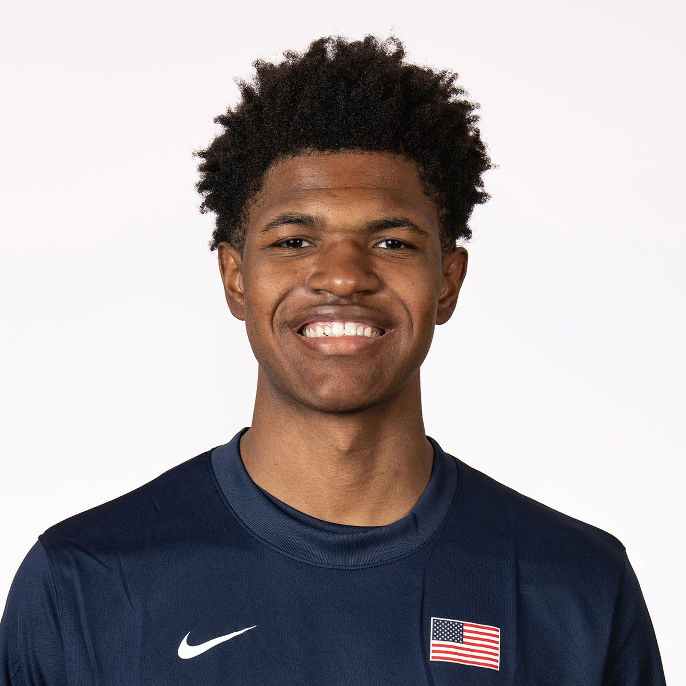

2027 NBA Draft · Preseason Report · Jul 5, 2026
Cameron Williams
Preseason scouting notes ahead of Duke's 2026-27 season.

Draft Projection
NBA Role Projection
Stats
No college minutes logged yet — this section fills in once the season tips off.
Info
School: Duke | Class: FR | Position: F/C | Height: 6'11" | Weight: 200 | Wingspan: 7'2"
Physical
He has a thin 6'11", 200-pound frame with plenty of room to add strength. His overall athletic profile is average, grading around a 5/10 in quickness, vertical explosiveness, and lateral agility. Improving his body will be essential as he adjusts to stronger, more physical competition.
Offense
He has smooth shooting mechanics and outstanding touch for a player his size, giving him significant long-term upside as a stretch big. Although the three-point percentages have yet to become consistently efficient, the foundation as a shooter is evident. Around the rim, he finishes well when opportunities are created for him.
The biggest concern is his lack of self-creation. Much of his offense comes from spot-up opportunities or difficult fadeaway jumpers, and he rarely creates easy shots off the dribble. His shot profile can become overly jump-shot reliant, and without growth as a creator, he may settle into more of a complementary offensive role.
Defense
He has the size to block shots, but he has yet to consistently impact the game as a true rim protector. His rebounding numbers are underwhelming for his size, and adding strength will be important if he is going to hold up defensively against NBA frontcourts.
Outlook
At this stage, his game resembles Jabari Smith Jr.—a floor-spacing forward with excellent touch and shooting upside. He projects as an ideal stretch four who can punish defenses from the perimeter, but his long-term ceiling will depend on whether he develops more self-creation and becomes more impactful on the glass and defensively.